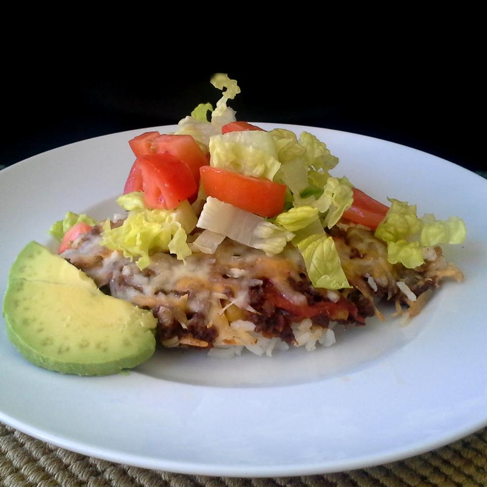

Taco-Skillet

Description
Easy Taco Skillet
Ingredients
- 1 pound ground beef
- 1 onion, chopped
- 1 (14.5 ounce) can diced tomatoes
- 2 cups water
- 1 cup converted rice
- 1 (1 ounce) package taco seasoning
- 1 cup shredded Mexican cheese blend
- 1 cup shredded lettuce
Steps
- Heat a large skillet over medium heat; cook and stir beef and onion until beef is browned, about 5 minutes. Drain. Stir tomatoes,
water, rice, and taco seasoning into beef mixture and bring to a boil. Reduce heat to medium-low, cover, and simmer until rice is tender,
about 25 minutes. Top with Mexican cheese blend and lettuce before serving.